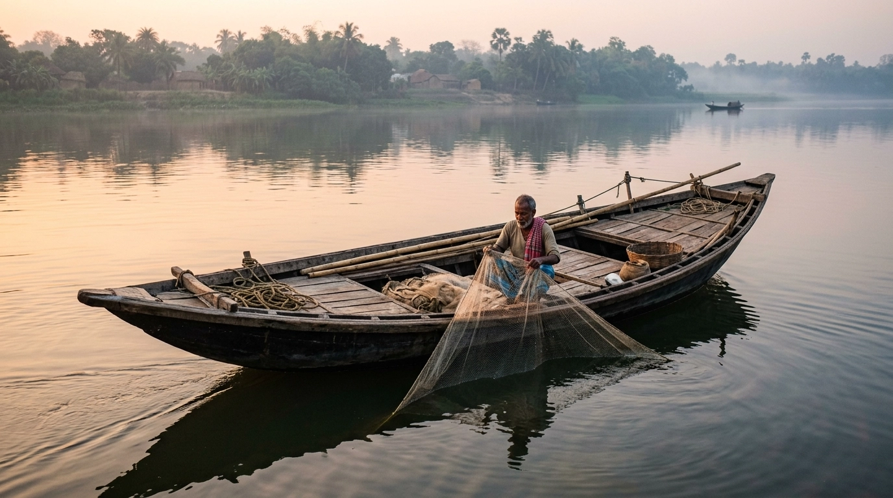
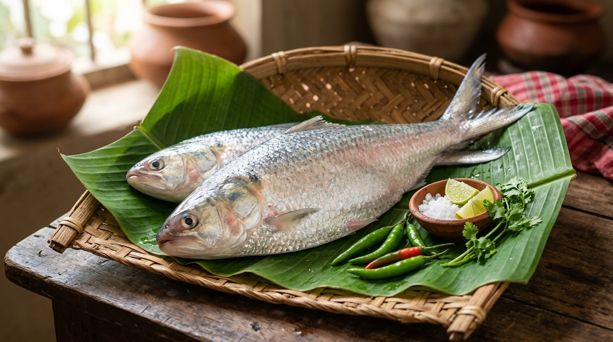
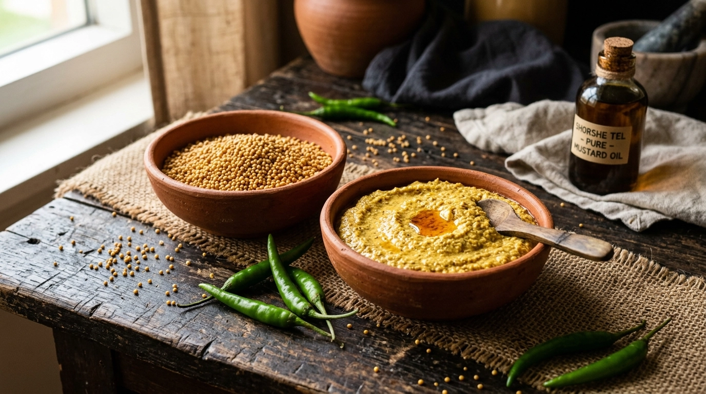
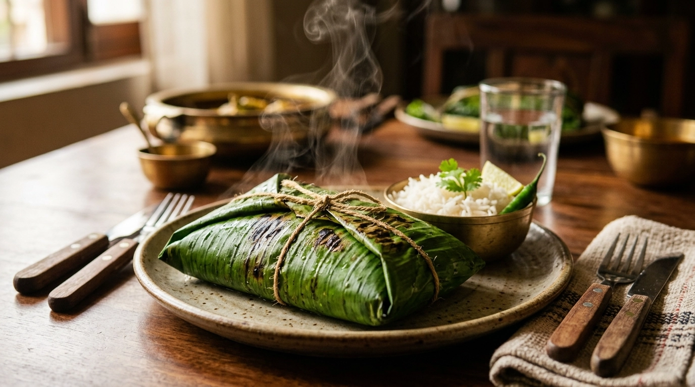
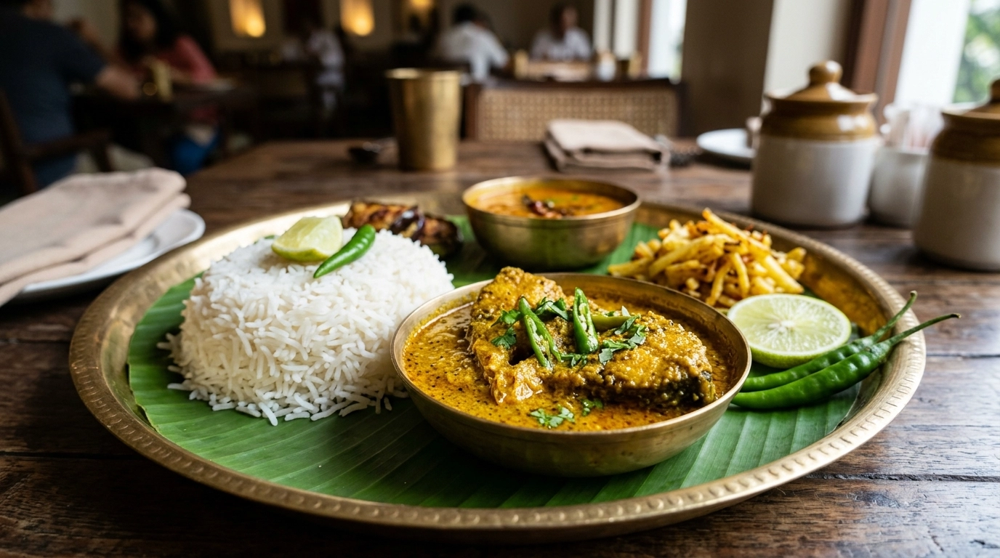
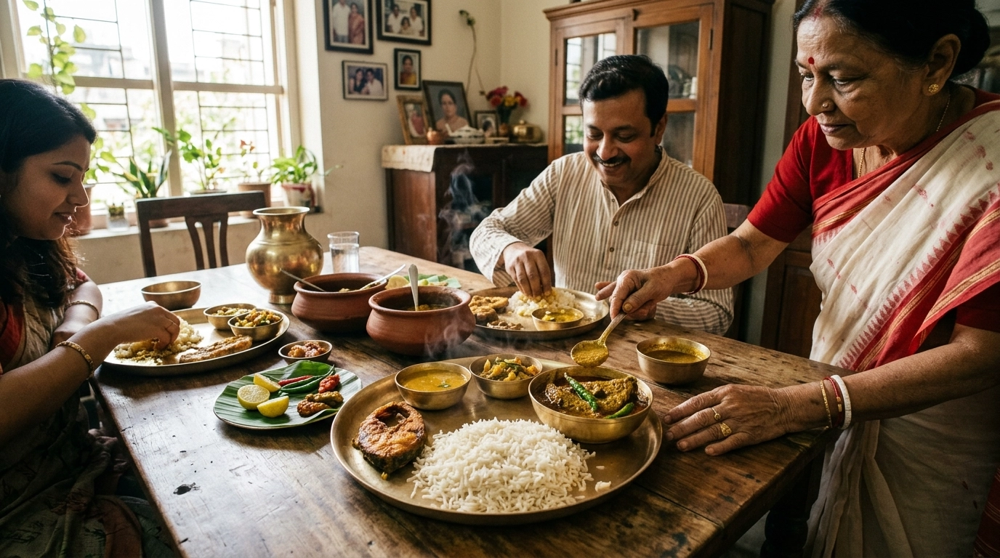
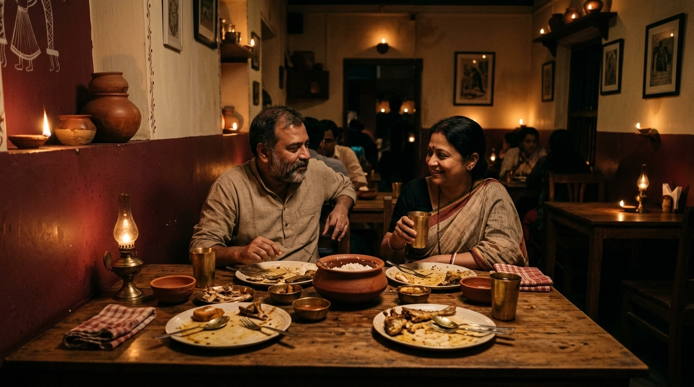

THE TASTE
OF BENGAL
Experience the authentic flavors of
Bengal from cherished classics to
regional favourites, crafted with
tradition and served with love.


Experience the authentic flavors of
Bengal from cherished classics to
regional favourites, crafted with
tradition and served with love.
From cherished classics to regional favourites, every dish is prepared with tradition, the finest ingredients and a whole lot of love.

Fresh Hilsa cooked in rich mustard sauce with green chillies — a timeless Bengali classic.
Explore Menu →How does Bengali food reach the table? A continuous journey through river, harvest, and tradition.

01Bengal's rivers have shaped the region's food traditions for generations, bringing fresh fish to everyday tables.

02Hilsa, Rui and Katla are carefully selected according to season, freshness and traditional Bengali cooking.

03Sharp mustard, green chilli and fragrant spices create the unmistakable character of Bengali fish dishes.

04Paturi is wrapped in banana leaf and gently steamed, allowing the fish, mustard and spices to cook together.

05The journey from river to kitchen finally becomes a shared Bengali meal — warm rice, fish and conversation.

Bengali dining is more than food. It is a ritual of gathering, sharing and passing traditions from one generation to the next.
DISCOVER THE EXPERIENCE →